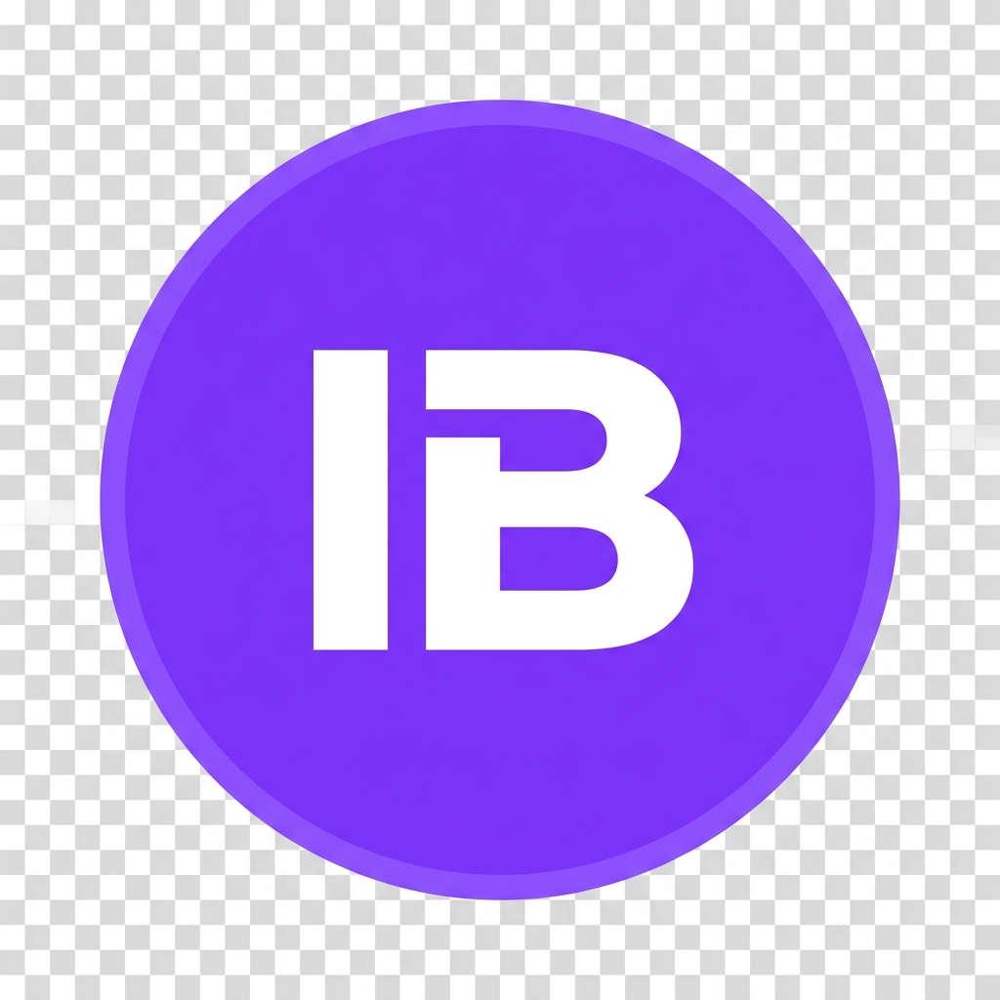

InterviewboldConnect Your AI Model
To use the AI Copilot in the app, we need to connect to your Puter account. This will open a secure window for you to log in.
Waiting for authentication...

InterviewboldTo use the AI Copilot in the app, we need to connect to your Puter account. This will open a secure window for you to log in.